STEP 1 OF 3
×
Begin Your Yatra
How many seats would you like to book?
1
2
3
4
5
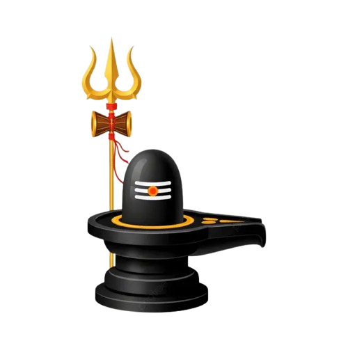
Sacred Steps to Srisailam: A Journey of Devotion and faith
Mahashivaratri and Ugadi are among the most sacred and cherished festivals in the Hindu tradition. Every year, during these auspicious occasions, thousands of ardent devotees of Lord Mallikarjuna embark on a spiritual journey to Srisailam on foot, traversing the dense forests of the Nallamala range in Andhra Pradesh to seek the divine darshan of Goddess Bhramaramba and Lord Mallikarjuna Swamy.
Lakhs of devotees undertake this sacred paadayatra from Kurnool and other regions of Andhra Pradesh, as well as from neighboring states such as Karnataka and Maharashtra. Some pilgrims begin their journey from their own homes, walking extraordinary distances of nearly 600–700 kilometers over a span of 10–12 days. It is estimated that nearly three lakh devotees pass through the Atmakur–Nallamala forest corridor each year between January and April.
Along the way, pilgrims visit several revered Shaiva centers, including the historic stone steps believed to have been constructed in 1326 CE by the Reddy king Prolaya Vema Reddy. Devotees offer prayers at numerous temples en route, deepening their spiritual experience before finally reaching Srisailam.
Pilgrims of all ages—from young children to elders in their seventies—brave the rugged terrain of the Nallamala hills, covering a 45-kilometer forest stretch. The trek typically spans 12 to 48 hours, depending on the pace of the yatris, with rest taken wherever possible along the route. The journey culminates at the hilltop, where the magnificent Kailasa Dwara stands as a gateway to divine grace.
This ancient tradition of trekking to the sacred abode of Lord Mallikarjuna has been faithfully practiced for over 400 years, symbolizing unwavering devotion, endurance, and spiritual unity.
The Shreeshail paadayatra through the Nallamala forests is not an easy journey. The trek spans approximately 46 kilometers and takes 12–14 hours, often under hot and dry conditions, with limited water points—especially in the latter half of the route.
This demanding pilgrimage can be physically exhausting, particularly for those who are not accustomed to long-distance walking or trekking. Certain sections of the trail are also risky, notably the ascent of the first and last peaks, which must be navigated slowly and with great care.
Please note that there is no U-turn option once the paadayatra begins. Pilgrims must be prepared to complete the entire route without interruption. Assistance along the way is minimal, as fellow yatris are also focused on completing their own journey.
There have been several instances of pilgrims joining the trek without assessing their health conditions beforehand. As a result, both first-time and even experienced yatris have struggled to complete the paadayatra. Therefore, if your current health does not adequately support this level of physical exertion, we strongly advise you to reconsider your plan and avoid putting unnecessary strain on your body.
At least 10 days prior to the yatra, ensure that all vital health parameters—such as blood pressure, blood sugar, cholesterol levels, and heart rate—are within normal limits. It is highly recommended to consult your family physician and obtain medical clearance before registering for the paadayatra. A proper health screening and professional medical advice are essential.
Glimpses of the divine path and devotion.
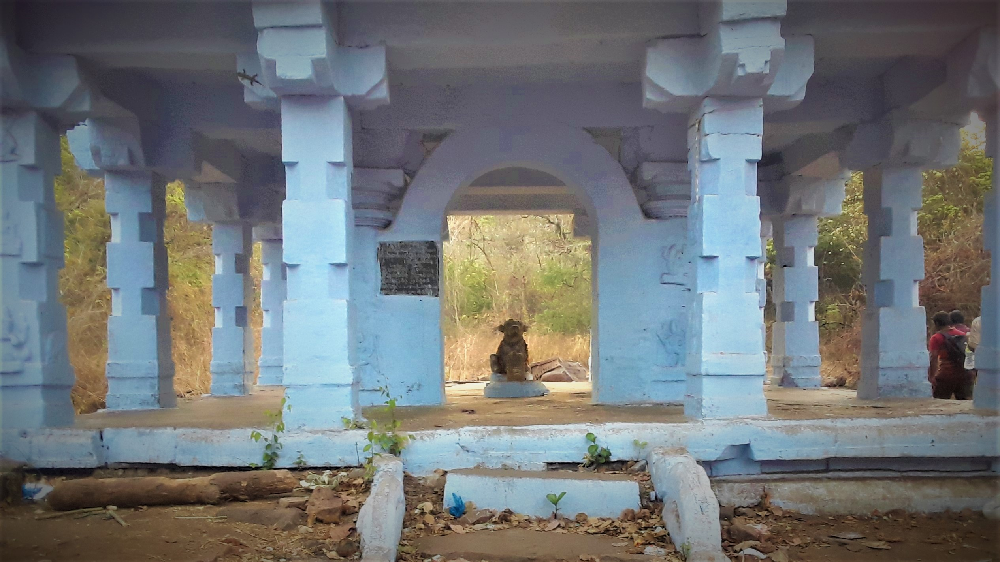
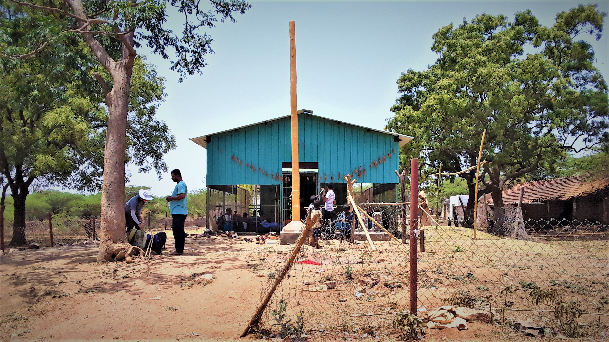
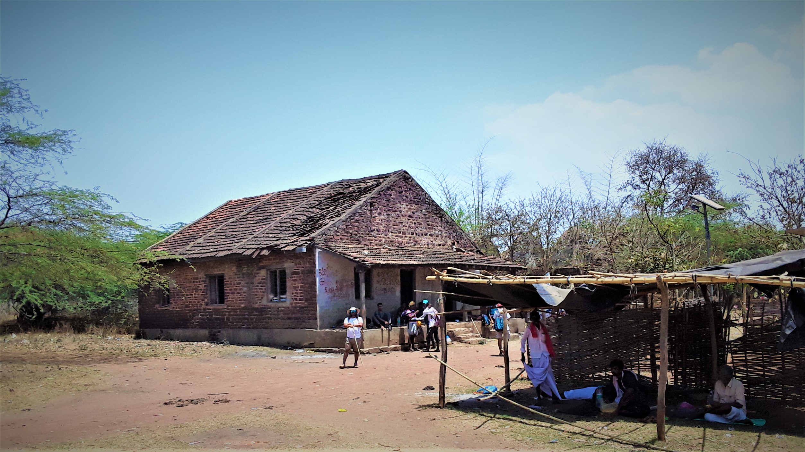
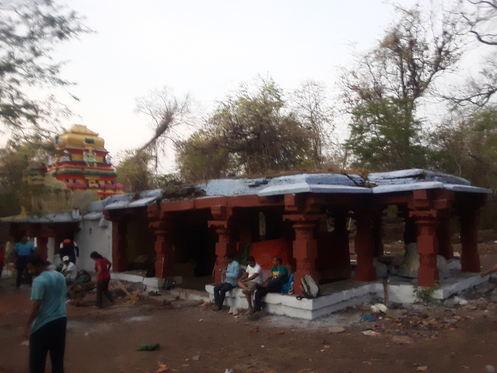
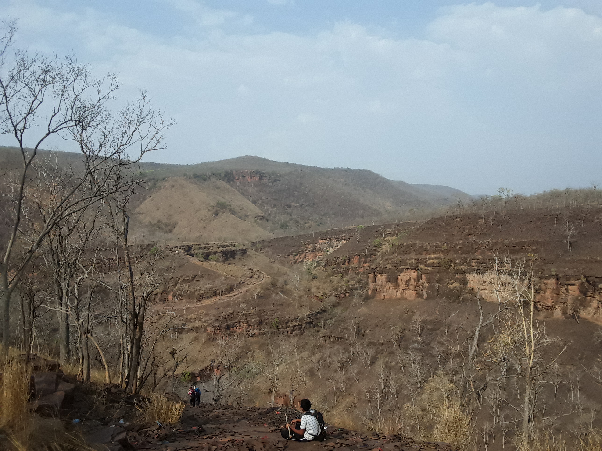
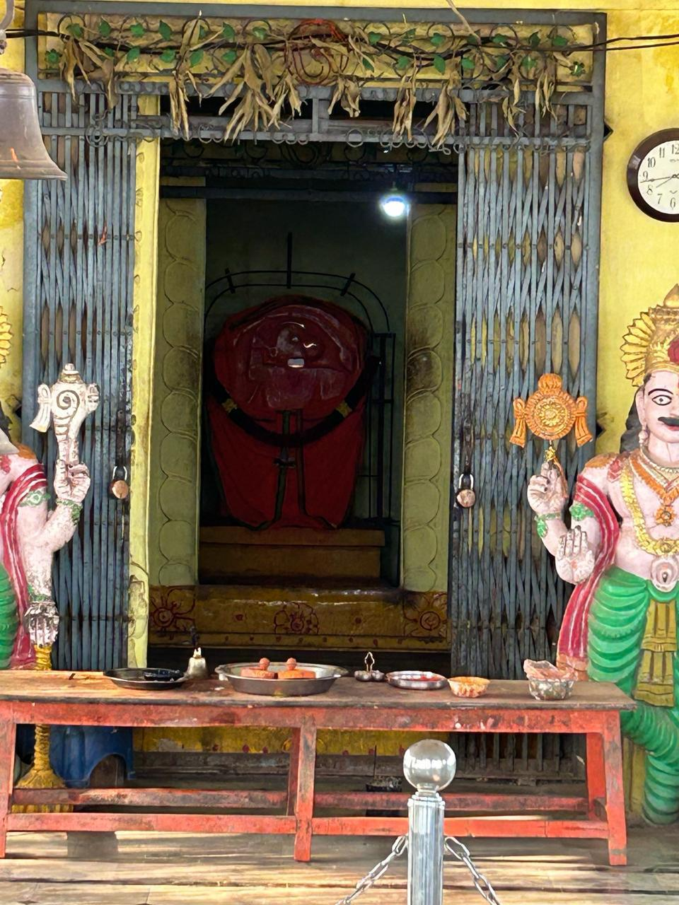
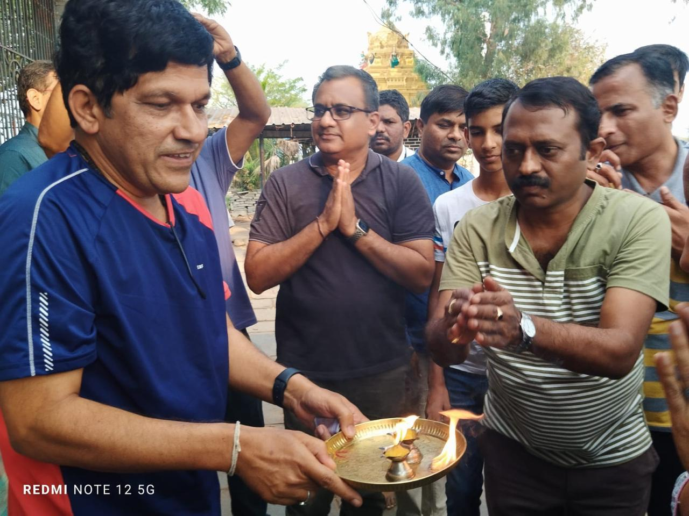
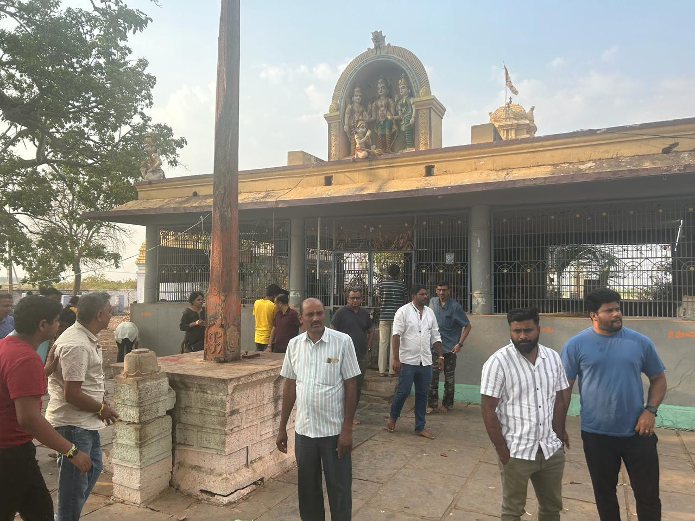
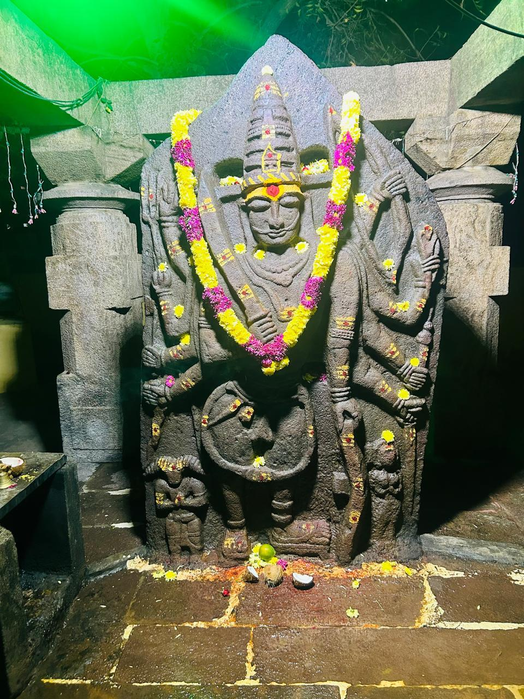
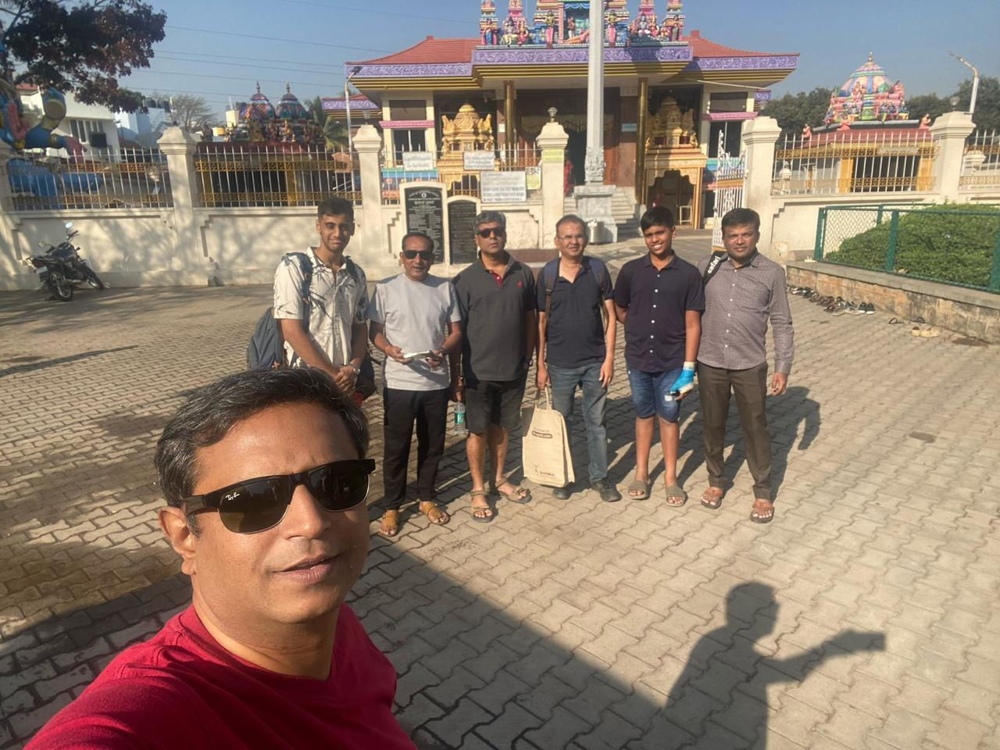
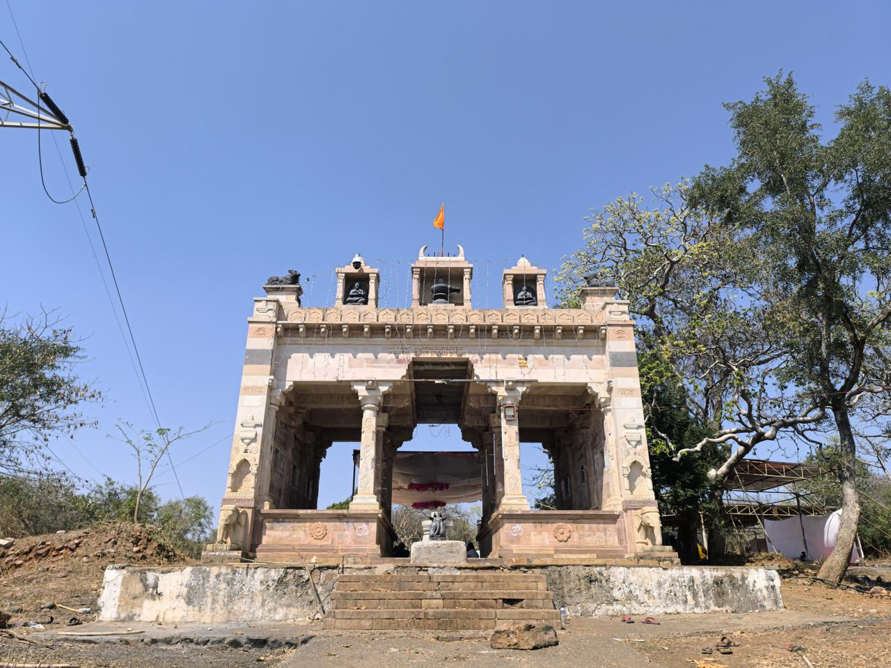
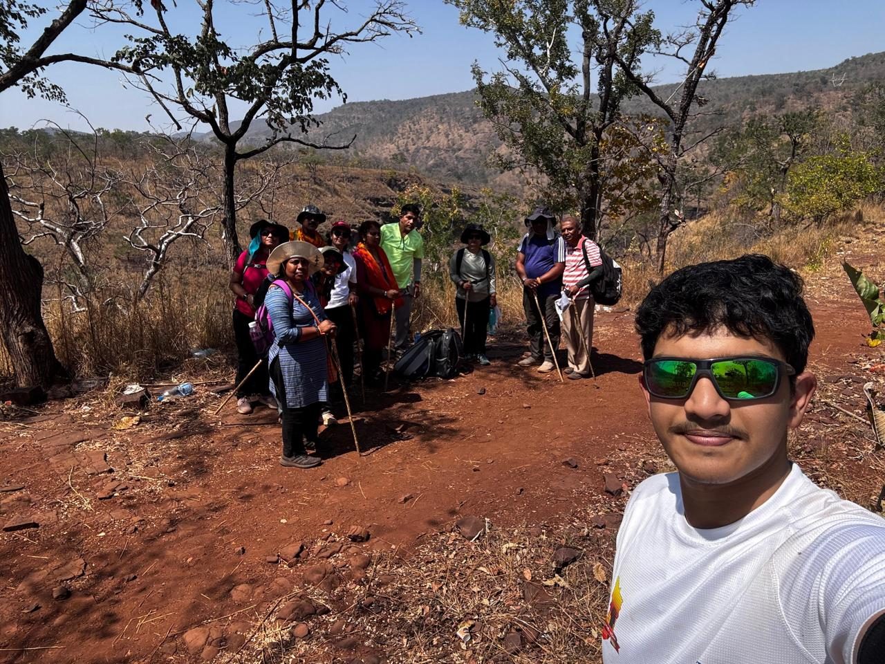
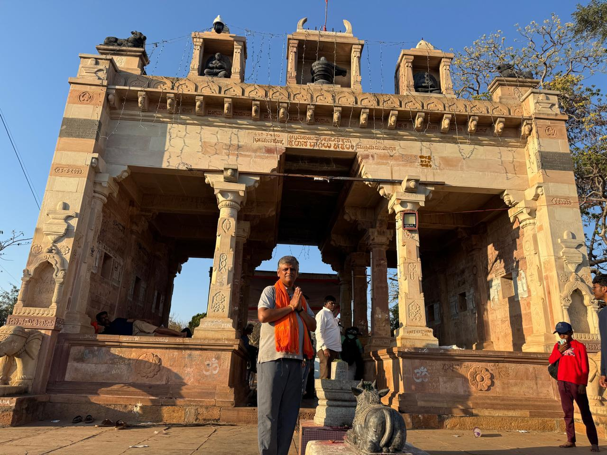
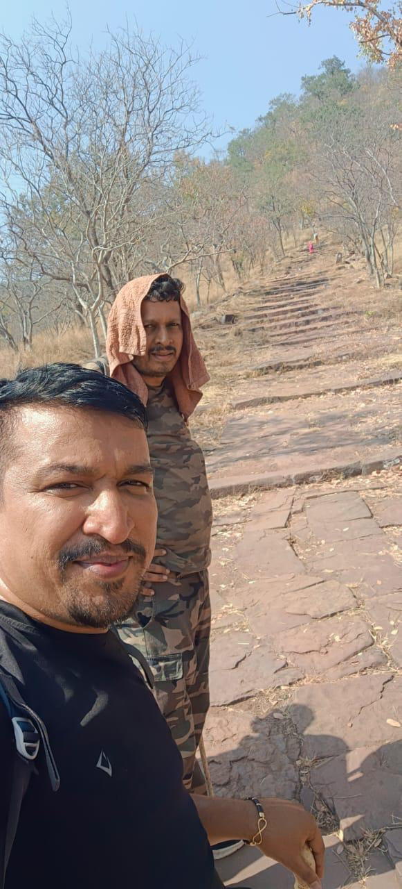